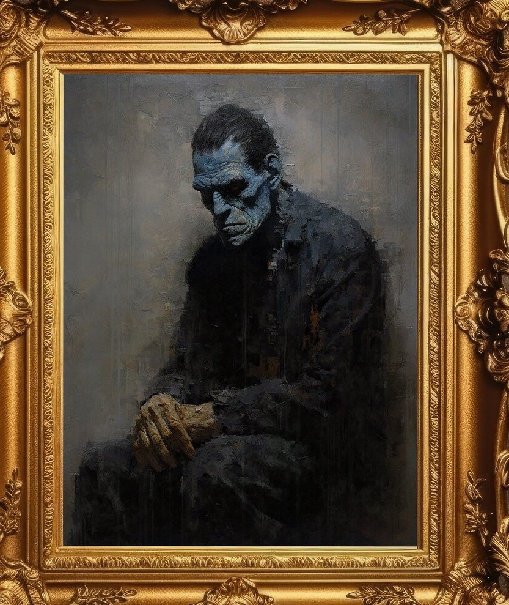

English · Première du lycée général et technologique · B1+ to B2 · Fictions et réalités
Mary Shelley: The Modern Prometheus
The Maker’s Shadow. Who is the real monster: the creature, or the one who made him?
Axe du programme (lycées)
Tronc communFictions et réalités : la fiction gothique face aux dérives du monde réel ; figure du monstre et responsabilité du créateur.
Spécialité LLCERRencontres (l’altérité, la figure du monstre) ou Arts et débats d’idées.
Ligne culturelleDark Romanticism ; de Villa Diodati (1816) aux débats contemporains sur la bioéthique et la responsabilité du créateur.
Niveau CECRL
B1+ to B2. Réception B1+ : comprendre un extrait littéraire dense (Frankenstein, Chapter 5). Production et interaction B2 : argumenter, défendre un point de vue, réagir spontanément (cross-examination).
Problématique
Who is the real monster: the creature, or the one who made him?
Objectifs linguistiques
Regret et reproche (should have + past participle) ; hypothèse passée (If + Past Perfect, then would have) ; voix passive ; lexique gothique (dreary, eerie, ghastly) et judiciaire (guilty, counsel, liability, outcast, shunned) ; registre dramatique à l’oral.
Ancrage culturel
Mary Shelley ; Villa Diodati, été 1816 (« the year without a summer » après l’éruption du Tambora) ; Frankenstein; or, The Modern Prometheus (1818) ; la ligne gothique jusqu’à aujourd’hui ; éthique de la création scientifique.
Place dans le programme
| Repère | Texte |
|---|---|
| Programme | Programme d’anglais pour les classes de lycée général et technologique, arrêté du 5 mai 2025, BO n° 22 du 29 mai 2025. Axes : Fictions et réalités ; Rencontres (altérité). |
| Niveau | Première / Terminale, LVA : consolidation B1+ et visée B2. Version bac pro possible en B1. |
| Grammaire | should have + V-en ; conditionnel passé ; passif ; connecteurs d’argumentation. |
| Lexique | Gothique, marginalisation, justice ; registres littéraire et judiciaire. |
Activités langagières travaillées
CO Séance 1 : contexte Villa Diodati / Tambora.
CE Séances 2 et fiche intermédiaire : Chapter 5.
EOI Séances 3 et 5 : voix de la Créature ; procès (cross-examination).
EOC Séances 4 et 5 : médiation pop culture ; plaidoiries.
Médiation Séance 4 : déformation du mythe Créateur / Créature.
Citoyenneté Feedback : responsabilité créateur / création (IA, bioéthique).
Introduction
Where are we going, and why?
Who is the real monster: the creature, or the one who made him?
Why this unit?
In 1816, on the shores of Lake Geneva, a young woman told a ghost story that never stopped growing. Mary Shelley’s Frankenstein is not only a horror tale: it is a novel about ambition, abandonment, prejudice and responsibility.
In this sequence you will listen to the storm that created the story, read the night Victor brings his creature to life, hear the outcast’s own voice, track how pop culture mixed up creator and creature, and finally put Victor on trial.
Your road map
At the end of this unit, you will be able to: analyse a literary extract, use should have and past hypotheses, argue with gothic and courtroom lexis, and take part in a timed courtroom interaction.
Lesson 1: The Birth of a Monster
CO · Villa Diodati, Mount Tambora and the year without a summer.
Warm-up · 5 minutes
Flash questions. Answer quickly in English.
- Who wrote Frankenstein?
- In which century was it first published?
- What does the word gothic make you think of?
- Who is usually called “Frankenstein” in films? Is that accurate?
Answer key
- Mary Shelley (Mary Wollstonecraft Godwin Shelley).
- The nineteenth century: first edition 1818 (anonymous), then 1831 with her name.
- Possible answers: dark castles, storms, fear, the supernatural, ruined abbeys, pale heroes…
- Films often call the creature “Frankenstein”, but in the novel Frankenstein is the scientist; the being he makes has no name.
Before you listen 10 min
In June 1816, Mary Godwin (not yet Shelley), Percy Bysshe Shelley, Lord Byron, Claire Clairmont and John Polidori stayed near Geneva at the Villa Diodati. The weather was strange: cold, wet, almost no summer. Scientists later linked that climate shock to the 1815 eruption of Mount Tambora in Indonesia. Europe lived through “the year without a summer”.
Trapped indoors, Byron challenged the group to write ghost stories. Mary’s story became Frankenstein; or, The Modern Prometheus.
| Word | Meaning |
|---|---|
| dreary | sad, dark and depressing |
| eerie | strange in a frightening way |
| a ghost story | a story told to frighten, about spirits or the supernatural |
| ambition | a strong desire to achieve something great |
| to bring to life | to make something living (here: to animate a body) |
| Prometheus | in Greek myth, the Titan who stole fire for humans and was punished |
Listen / watch: the storm that made a novel 20 min
Your teacher shows a short authentic clip (BBC / History) about Villa Diodati and 1816, or reads the script below twice.
In the summer of 1816, the sun barely shone over Europe. Ash from a distant volcano had dimmed the skies. On the shore of Lake Geneva, a group of young writers waited for the rain to stop. Byron proposed a contest: each of them would invent a ghost story. Mary, only eighteen, dreamed of a pale student kneeling beside a creature he had made from dead parts. When that creature opened its dull yellow eye, the student fled in horror. From that dream came one of the most famous novels in English: Frankenstein, the tale of a maker and the being he abandoned.
Check you understand
- Why was the summer of 1816 special?
- Where did the writers stay?
- What challenge did Byron set?
- What did Mary dream of?
- What did the student do when the creature woke?
Answer key
- It was cold and dark: “the year without a summer”, linked to the Tambora eruption.
- Near Lake Geneva, at the Villa Diodati.
- To invent ghost stories.
- A pale student and a creature made from dead parts, opening its yellow eye.
- He fled in horror (he abandoned his creation).
Speaking: maker and monster 15 min
In pairs. One student is Mary Shelley in 1831, looking back; the other is a journalist. Ask and answer for two minutes, then swap.
- Why did you write this story?
- What was the weather like that summer?
- Who is the real monster in your novel?
- I wanted to show that…
- If Victor had not abandoned the creature, …
Homework
- Learn the six vocabulary words.
- Write 80-100 words: Why does Mary Shelley call Victor “the Modern Prometheus”? Use at least one past hypothesis (If … had …, … would have …).
Lesson 2: Breathing Life into the Flesh
CE · Chapter 5 extract · atmosphere, anatomy, abandonment · should have.
Recap · 5 minutes
- What was “the year without a summer”?
- Who challenged the group to write ghost stories?
- In the novel, is “Frankenstein” the creature’s name?
Answer key
- 1816: a cold, dark summer after the Tambora eruption.
- Lord Byron.
- No: Frankenstein is the scientist; the creature has no name.
Read: the night of creation 25 min
Read Chapter 5 from “It was on a dreary night of November…” to “disgust filled my heart.” (your anthology or classroom extract).
“It was on a dreary night of November that I beheld the accomplishment of my toils.”
“I saw the dull yellow eye of the creature open; it breathed hard, and a convulsive motion agitated its limbs.”
“His limbs were in proportion, and I had selected his features as beautiful. Beautiful! Great God!”
“…but now that I had finished, the beauty of the dream vanished, and breathless horror and disgust filled my heart.”
“I rushed out of the room, and continued a long time traversing my bed-chamber…”
Mary Shelley, Frankenstein, Chapter 5 (quotations from the teaching pack).Task A · Atmosphere (B1)
- When does the scene take place (month, time of day, weather / light)?
- Quote two words that create a gothic mood.
Task B · The great contrast (B1+/B2)
Explain the contrast between Victor’s dream and what he sees. Use three adjectives from the text.
Task C · Ethics (B2)
What does Victor do as soon as the creature wakes? What does that reveal about his responsibility as a creator?
Answer key
A. A dreary night of November; candle / pale yellow light; rain and gloom in the wider chapter. Gothic words: dreary, dull yellow, convulsive, horror, disgust.
B. He had chosen “beautiful” features; when life comes, the dream vanishes: the eye is dull yellow, the motion convulsive; beauty turns to horror and disgust.
C. He rushes out and flees: immediate abandonment of a newborn being. He judges by appearance and refuses the duty of a maker / father.
Written record · should have 15 min
The rule
Regret or blame about the past: should have + past participle.
Victor should have stayed with the creature. · He should not have fled.
Past hypothesis: If + Past Perfect, … would have + past participle.
If Victor had not abandoned the creature, no one would have died.
Rewrite
- Victor ran away. That was a mistake. Rewrite: Victor ______________________
- Victor abandoned the creature, so it became violent. Rewrite: If Victor ___________________
- He chose beauty only by appearance. Blame him with should not have.
Answer key
- Victor should not have run away. / Victor should have stayed.
- If Victor hadn’t abandoned the creature, it wouldn’t have become violent.
- He should not have judged the creature by its appearance alone.
Vocabulary: gothic body and mind
| English | Meaning |
|---|---|
| dreary / eerie / ghastly | depressing · uncanny · shocking / death-like |
| limbs · features · to behold | arms and legs · face details · to see (literary) |
| convulsive · to agitate | sudden shaking · to shake / disturb |
| to rush out · to traverse | to leave in a hurry · to walk across repeatedly |
| disgust · horror | strong rejection · intense fear |
Homework
- Finish Tasks A-C in your notebook if needed.
- Write five sentences with should have about Victor’s choices that night.
Lesson 3: The Voice of the Outcast
EOI · the Creature’s speech · appearance versus inner life.
Recap · 5 minutes
- Quote one phrase that shows Victor’s disgust.
- Complete: Victor ________________ (stay) with his creation.
- What is an outcast?
Answer key
- e.g. “breathless horror and disgust filled my heart.”
- should have stayed
- Someone rejected by society; a person forced to live apart.
Read: the Creature argues 15 min
From the middle of the novel, the Creature speaks to Victor. He has learned language by watching the De Lacey family. He wanted affection; he was shunned.
“I was benevolent and good; misery made me a fiend.”
“I ought to be thy Adam; but I am rather the fallen angel.”
Key ideas for pairs (paraphrase in class from your extract): he yearned for affection; he was brutally shunned; he was an outcast from the first second of his existence.
Ideas aligned with the teaching pack (Creature as witness).- How does the Creature describe his original nature?
- What does he accuse Victor of?
- Why are the De Laceys important?
Answer key
- Benevolent and good; capable of love.
- Abandonment, refusal of a father’s duty, rejection based on appearance.
- They show him human kindness and language; when they reject him too, his hope collapses.
Pair work: face versus heart 20 min
Student A defends society’s fear of the Creature’s appearance.
Student B speaks as the Creature (or as counsel for the Creature).
Three minutes, then swap. Use the target structures.
- You should have guided me. / He should have been a father to me.
- If Victor had given me a single drop of affection, I would have remained peaceful.
- I yearned for affection, but I was brutally shunned.
- Appearance is not the same as nature.
Homework
Write a 120-word monologue in the first person as the Creature: one paragraph on hope with the De Laceys, one on rejection. Include two should have and one If … had …, … would have ….
Lesson 4: Frankenstein in Pop Culture
EOC & mediation · how the myth was bent from page to screen.
Recap · 5 minutes
- Give one argument the Creature uses against Victor.
- What does shunned mean?
Answer key
- e.g. Victor should have been a father; abandonment caused misery.
- Rejected, avoided, pushed away by others.
Iconographic grouping 20 min
Look at a grouping prepared by your teacher (1931 film still, comic cover, a bioethics headline). Do not confuse the documents with the 1818 text.
- In the 1931 film tradition, who is usually called “Frankenstein”?
- How does that naming confuse creator and creature?
- Find one detail that comes from the novel and one that does not.
- Mediation: explain in French to a classmate who has not read the book why the mix-up matters for our guiding question.
Answer key
- Often the creature (with bolts, green skin, grunts).
- It erases Victor’s responsibility and turns the victim of abandonment into “the monster” by name.
- Novel: articulate, literate Creature; scientist named Frankenstein. Film tropes: mute giant, mad assistant, villagers with torches (not Shelley’s structure).
- Open answer: if we call the creature “Frankenstein”, we forget who made and fled.
Speaking: one-minute myth check 15 min
Alone, then in pairs: a one-minute oral correction of a common error about Frankenstein.
- People often think that…, but in the novel…
- The real question is not who looks monstrous, but who acted without conscience.
- Pop culture turned… into…
Bridge to the trial
Tomorrow Victor faces the Court of Albion. Prosecution and Defence will use Chapter 5 quotations as exhibits. Learn these two lines by heart:
- “I rushed out of the room…”
- “breathless horror and disgust filled my heart.”
Homework
Prepare your role for Lesson 5 (your teacher assigns: Prosecution, Defence, Creature, Victor, Jury, Judge). Learn the phrases on the Courtroom Memo (see Lesson 5).
Lesson 5: The Trial of Victor Frankenstein
Final EOI · timed courtroom in autonomous groups.
Warm-up · Délier les langues · 5 minutes
- Opening ritual (1 min). Teacher knocks on the desk: “All rise! The Court of Albion is now in session!” The class stands and repeats: “All rise!”
- Accusation ping-pong (3 min). Teacher accuses students of everyday acts; they answer at once, no notes. Example: “You are accused of stealing my morning coffee!” Reply: “Objection, Your Honor! I couldn’t have stolen your coffee, I was in the hallway!”
- War cry (1 min). Prosecution: “He is the real monster!” · Defence: “Innocent until proven guilty!”
Room layout & logistics
[ THE JUDGE / JURY ]
(facing the court)
___________________________________________
| |
| [ THE WITNESS ] |
| (Creature or Victor) |
|___________________________________________|
[ THE PROSECUTION ] [ THE DEFENSE ]
(counsel for the charge) (counsel for Victor)
Islands of 5-6 students, autonomous and simultaneous.
- Tokens: each student gets 3 tokens. Each spontaneous turn or objection costs one token. When your three are gone, wait for partners.
- Timing (12 minutes per trial): 2 min openings, then 3 min Creature examination, then 3 min Victor examination, then 3 min closings, then 1 min verdict.
Fiche 5A · Courtroom Memo Sheet
General phrases
- Your Honor, …
- The Prosecution claims that… / The Defense argues that…
- Members of the jury, …
How to object
- “Objection, Your Honor! The opposing counsel is speculating / harassing the witness.”
- Judge: “Objection sustained!” or “Objection overruled!”
Target structures (required for marks)
- Blame: “Victor, you should have anticipated the consequences!”
- Regret: “I couldn’t have known it would turn into a nightmare.”
- Past hypothesis: “If Victor had not abandoned the creature, no one would have died.”
Prosecution · “Victor Frankenstein is guilty of gross negligence.” · “He utterly failed his duty as a creator.”
Defense · “My client is innocent. He was driven by a noble scientific ambition.” · “He acted out of legitimate, breathless terror.”
Creature · “I yearned for affection, but I was brutally shunned.” · “I was an outcast from the very first second of my existence.”
Fiche 5B · Literary exhibits (Chapter 5)
For the Prosecution
- “I rushed out of the room, and continued a long time traversing my bed-chamber…” : proof of cowardice and immediate abandonment of a newborn being.
- “…but now that I had finished, the beauty of the dream vanished, and breathless horror and disgust filled my heart.” : proof of prejudice: rejection based on appearance alone.
For the Defense
- “His limbs were in proportion, and I had selected his features as beautiful. Beautiful! Great God!” : pure scientific intent, no criminal premeditation.
- “I escaped to the court-yard… where I remained during the rest of the night, walking up and down in the greatest agitation” : temporary collapse under terror.
Pivot quote (both sides)
- “I saw the dull yellow eye of the creature open; it breathed hard, and a convulsive motion agitated its limbs.”
- Prosecution: the exact instant life begins : creator’s liability.
- Defense: proof that the being was intrinsically abnormal and terrifying.
Fiche 5C · Witness preparation
Fiche 5D · Jury verdict sheet
Members of the Jury (Names): ________________________________
Part 1 · Notes
- Prosecution arguments: ________________________________
- Defense arguments: ________________________________
Part 2 · Verdict
We, the Jury, have reached a final decision concerning the charge of criminal negligence and abandonment against Victor Frankenstein.
We find the defendant: [ ] GUILTY / [ ] NOT GUILTY
We have chosen this verdict because (minimum 50 words : use should have / past conditional):
Therefore, we sentence / we recommend that:
Signatures: ________________________________
Homework
Complete the written verdict if unfinished. Bring one sentence: My best line in the trial was…
Lesson 6: Feedback & Remediation
Optional follow-up · about 1 hour.
1 · Emotional debrief & verdicts 10 min
Juries read their decisions. Debate: why did some groups convict Victor and others acquit him?
2 · Co-evaluation 15 min
Self-analysis slip:
- What was my best line?
- Which target structure did I manage to use orally?
3 · Language remediation 20 min
- Grammar: repair classic errors noted in performance (e.g. he should has run becomes he should have run).
- Phonology (choral): creature /ˈkriːtʃə/, ghastly /ˈɡɑːstli/, hypothesis /haɪˈpɒθəsɪs/.
4 · Civic opening 15 min
Closing debate: Who is responsible if a created mind causes harm: the creator or the creation? Link to the axis Fictions et réalités.
Homework
Write 150 words: answer the question of responsibility with one comparison to Victor and the Creature. Use should have once and one past hypothesis.
Intermediate evaluation (CE · 20 minutes)
Printable · 20 points · Chapter 5.
Name: ___________________________ Class: _________ Date: _________
Read Chapter 5 (from “It was on a dreary night…” to “disgust filled my heart.”) and answer in English.
- Context and Atmosphere (B1) : /4
Describe the setting of the scene (time, weather, light). Quote the text. - The Great Contrast (B1+/B2) : /6
Explain the contrast between Victor’s initial dream and the physical reality. Use 3 text adjectives. - Character Psychology & Ethics (B2) : /6
Analyze Victor’s reaction when the creature wakes up. What does his action reveal about his responsibility? - Grammar Application (B1+/B2) : /4
a) Victor ran away. That was a mistake. (Use should not have): Victor ______________________
b) Victor abandoned the creature, so it became violent. (Use If Victor hadn’t…): If Victor ___________________
Answer key
1. Dreary night of November; pale / yellow light; gothic gloom (quote from extract).
2. Dream of beauty vs dull yellow eye, convulsive limbs, horror, disgust.
3. He flees: refuses responsibility; judges by appearance; abandons a dependent being.
4a. Victor should not have run away.
4b. If Victor hadn’t abandoned the creature, it wouldn’t have become violent. (or equivalent)
If I cannot come to class
You can work through the lessons and the CE worksheet on this page. The answer keys and the assessment grid are collected below, so that you can check your work if you are away or in hospital.
Summative grid (B1+/B2)
Trial performance · /20
| Criterion | B1 (1-2) | B1+ (3) | B2 (4-5) | Pts |
|---|---|---|---|---|
| Continuous speaking (EOC) | Choppy speech; lists literary facts; heavy dependence on notes. | Clear points from the text; few logical connectors. | Fluent, ordered, convincing; theatrical courtroom tone controlled. | /5 |
| Interaction (EOI) | Minimal or monosyllabic reactions; cannot intervene without a script. | Active cooperation; answers clearly but rarely relaunches. | Immediate reactivity; active listening; spontaneous objections. | /5 |
| Lexical tools | Poor / generic (good, bad, problem). | Adequate gothic and courtroom fields. | Rich and precise (ghastly, outcast, shunned, gross negligence, liability). | /4 |
| Grammatical tools | Present / simple past only; targets absent. | Targets present with morphology errors. | Complex structures used fluently (should have, If + Past Perfect). | /4 |
| Phonology & flow | Serious barriers to understanding. | Correct but monotonous / school-like. | Careful phonology; dramatic intonation supports argument. | /2 |
| Total | /20 |
Summative grid (B1+/B2)
Trial performance · /20
| Criterion | B1 (1-2) | B1+ (3) | B2 (4-5) | Pts |
|---|---|---|---|---|
| Continuous speaking (EOC) | Choppy speech; lists literary facts; heavy dependence on notes. | Clear points from the text; few logical connectors. | Fluent, ordered, convincing; theatrical courtroom tone controlled. | /5 |
| Interaction (EOI) | Minimal or monosyllabic reactions; cannot intervene without a script. | Active cooperation; answers clearly but rarely relaunches. | Immediate reactivity; active listening; spontaneous objections. | /5 |
| Lexical tools | Poor / generic (good, bad, problem). | Adequate gothic and courtroom fields. | Rich and precise (ghastly, outcast, shunned, gross negligence, liability). | /4 |
| Grammatical tools | Present / simple past only; targets absent. | Targets present with morphology errors. | Complex structures used fluently (should have, If + Past Perfect). | /4 |
| Phonology & flow | Serious barriers to understanding. | Correct but monotonous / school-like. | Careful phonology; dramatic intonation supports argument. | /2 |
| Total | /20 |
Professeur
Pour le professeur
Séquence construite à partir du pack « The Modern Prometheus & The Maker’s Shadow » (B1+/B2, six leçons, tâche finale : procès de Victor). Les corrigés et les grilles s’affichent en Version prof, et dans la version pour l’élève qui ne peut pas venir en classe. La Version dys allège les consignes et propose une police adaptée.
Album Facebook prévu : Melancholia and Monsters. Ne pas déployer sur Netlify ni publier tant que Carole n’a pas validé.
Déroulé
| Séance | Contenu | Activités |
|---|---|---|
| 1 | Villa Diodati, Tambora, année sans été | CO, EOI |
| 2 | Chapter 5 ; should have ; hypothèse passée | CE, EE |
| 3 | Voix de la Créature ; binômes | EOI |
| 4 | Pop culture ; médiation Créateur / Créature | EOC, médiation |
| 5 | Procès chronométré ; fiches 5A-5D | EOI, EOC |
| 6 | Feedback, remédiation, débat IA | EOI, EE |
Image d’ouverture
Portrait du monstre fourni par Carole (img/cover.jpg), remplaçable facilement. Pas de longue légende de droits, sur sa demande.
All files
Each file is offered as PDF, Word and LibreOffice.
- Version élève: PDF · Word · LibreOffice
- Version dys: PDF · Word · LibreOffice
- Version for the student who cannot come to class: PDF · Word · LibreOffice
- Version professeur (with answer keys and grids): PDF · Word · LibreOffice
- Évaluations: PDF · Word · LibreOffice